简介
DcmAppTest相当于VehicleSpy3和Canoe一个子集，只包含车载诊断测试功能。当前支持的TP协议只有ISO15765协议，应用协议支持ISO14229协议
本软件基于C# .net Framework 4.0开发，即使XP系统也可以运行本软件
使用本软件可以根据自己对应项目的车载诊断需求来新建对应的服务和子功能，来满足自己的需求。
相比较于VehicleSpy3和Canoe两者商业软件，本软件完全免费开源，完全可以使用本软件来满足对于车载诊断应用的测试需求。
本软件只用于测试车载CAN诊断应用，不能用来模拟车身的应用报文，如果您想模拟车身的应用报文，请看EcanSpy3
前置步骤
1.因为本程序支持的CAN设备是广成科技的CAN设备，所以你需要有个广诚科技的USB CAN盒
2.安装号USB CAN盒驱动，并且和电脑连接起来
3.请确保您的PC上安装了.Net Framework 4以上的版本
安装
1.点击DcmAppTest主页上的下载按钮，您会得到一个zip压缩文件
2.将此压缩文本解压缩到本地，您会得到如下的文件结构：
| DcmAppTest - 版本号
| --- addins
| ------ DummySecurityAccess.dll
| --- 若干个dll文件
| --- CSDcmTest.exe
| --- CSDcmTest.exe.config
| --- CSDcmTest.exe.manifest
您将下载的压缩文件解压到某个路径，运行解压下根目录中的CSDcmTest.exe即可运行本应用。
主窗口界面介绍
1. 主窗口功能分配如下图：
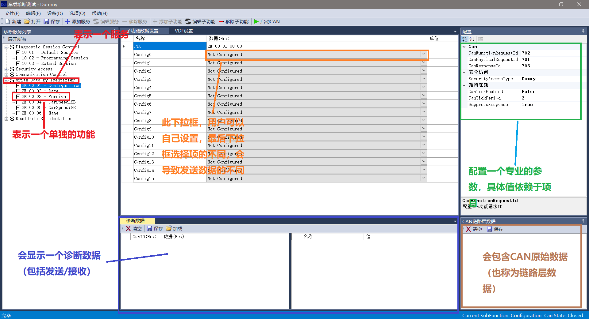
2. Vdf窗口分类如下图：
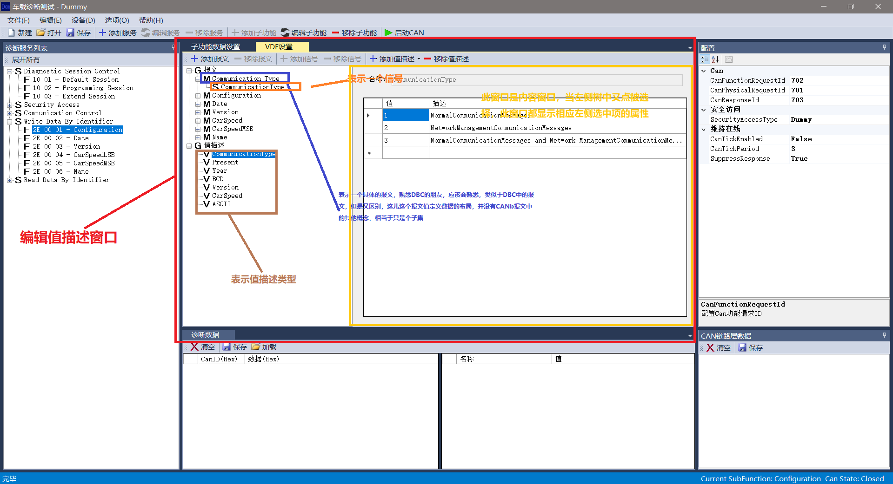
界面中涉及到的概念
- 服务 - 对应于ISO14229中的服务，他们一般是一一对应关系，当然你也可以定义一些ISO14229之外的服务，本软件也是支持的
- 子功能 - 对应于ISO14229中的子功能，但是不是绝对的对应，这儿更准确的将，可以成为功能，每个子功能对应的功能（因为ISO14229中定义某些服务是没有子功能的）
- 配置窗口中涉及到的概念：
- 物理请求CANID， 熟悉CAN的朋友肯定熟悉此概念
- 功能请求CANID
- 响应CANID
- 安全算法类型，这儿以组合框的形式展现，当您下载的时候，会出现Dummy，Dummy就是之前我们安装的插件
- 维持在线的相关设置，也是ISO协议定义的一个服务
- 值描述文件中，涉及到的概念：
- 报文 - 定义了一个被引用的名称，描述和字节长度
- 信号 - 定义了一个被引用的名称，起始位，长度，字节序和值描述
- 值描述 - 定义了值对应的描述 （四种类型值）
基本使用
1. 新建一个文件, 可以点击菜单，或者工具按钮，入下图所示（仅展示工具按钮）：
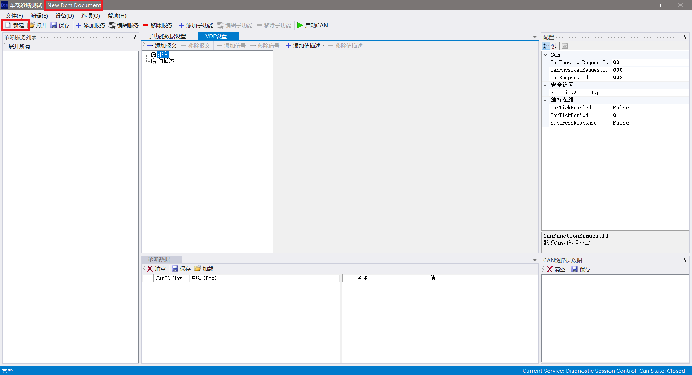
2. 保存文件到指定路径, 入下图所示：
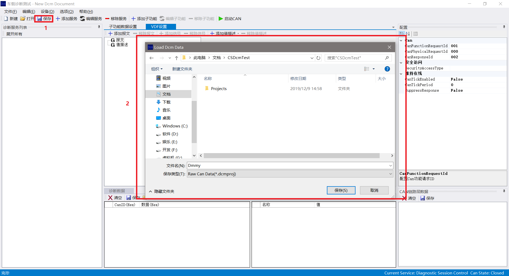
3. 创建Communication Control服务, 入下图所示：
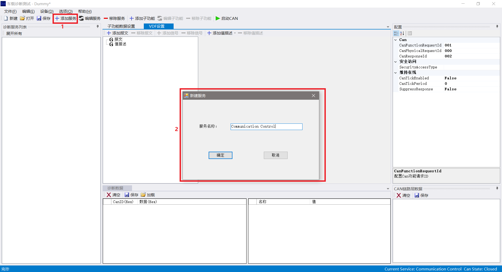
4. 创建Communication Type 值描述，入下图所示
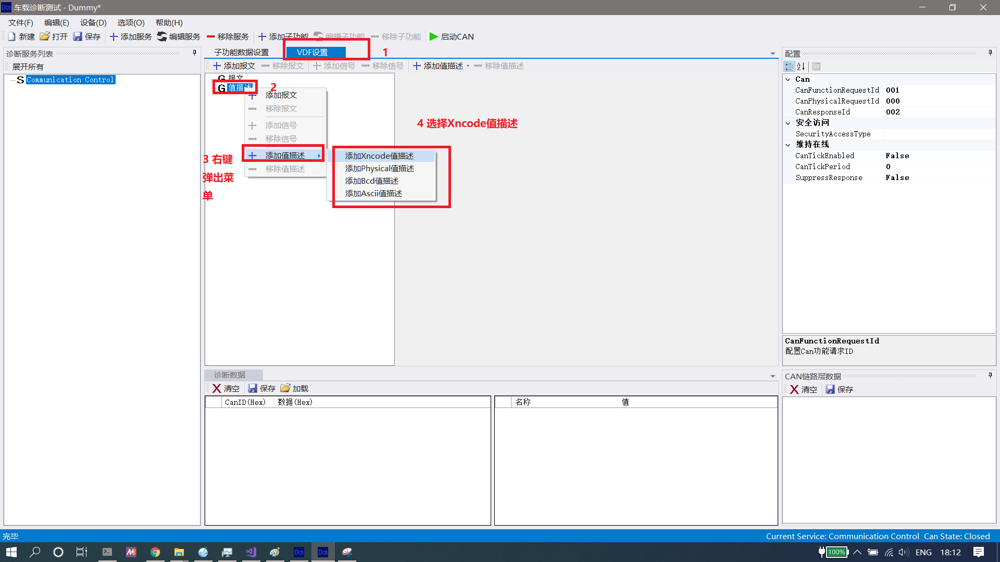
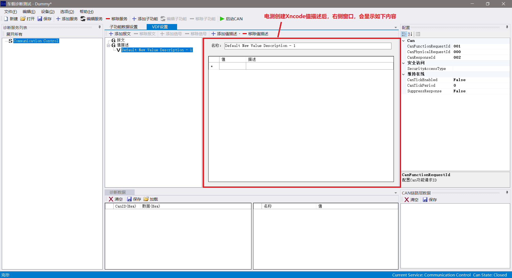
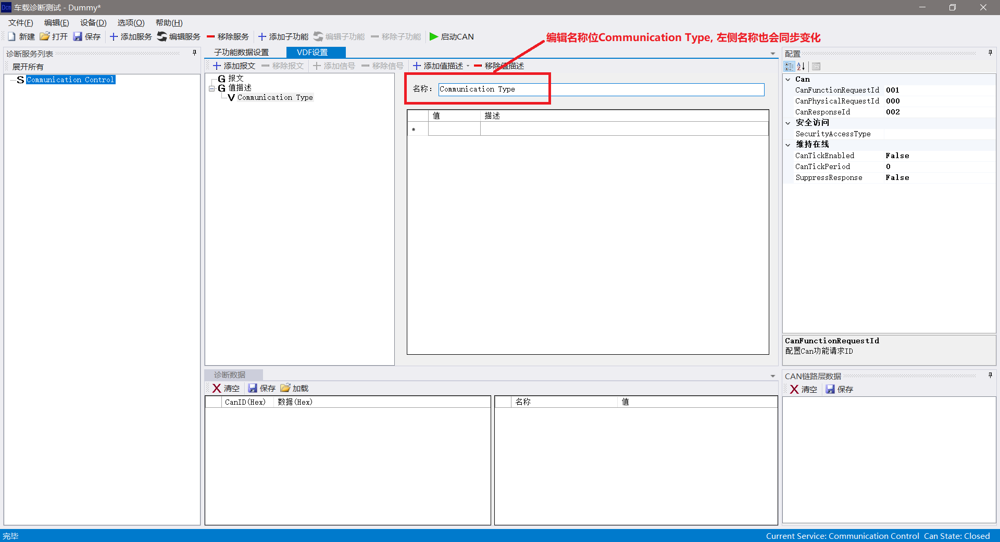
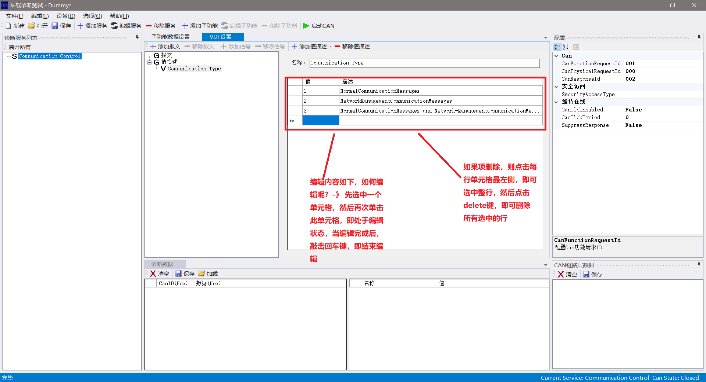
5. 创建Communication Type报文, 入下图所示
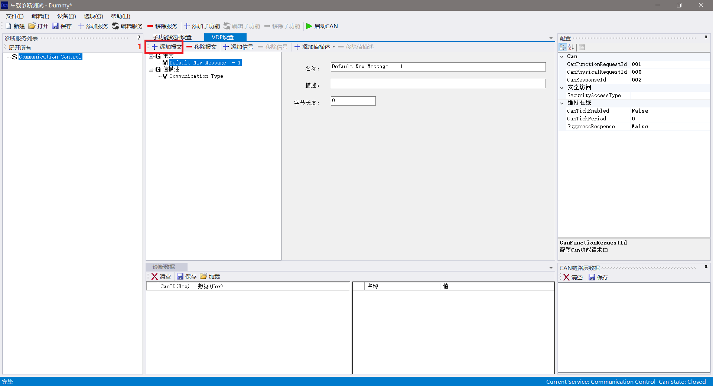
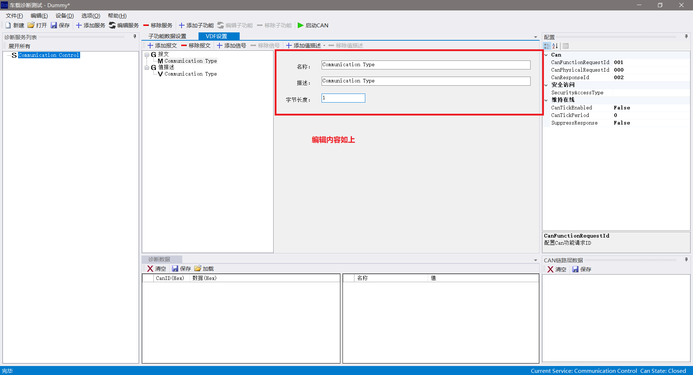
6. 创建Communition Type信号， 入下图所示
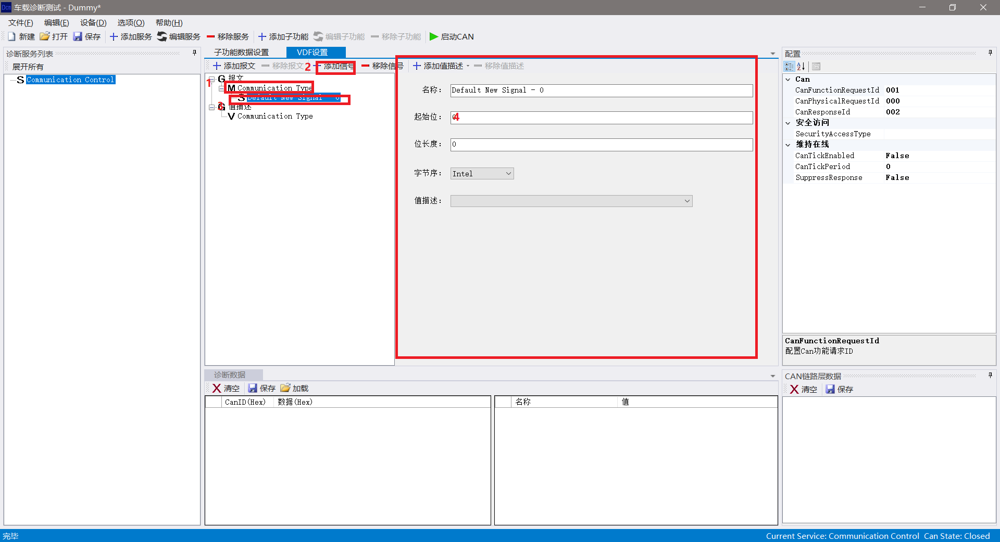
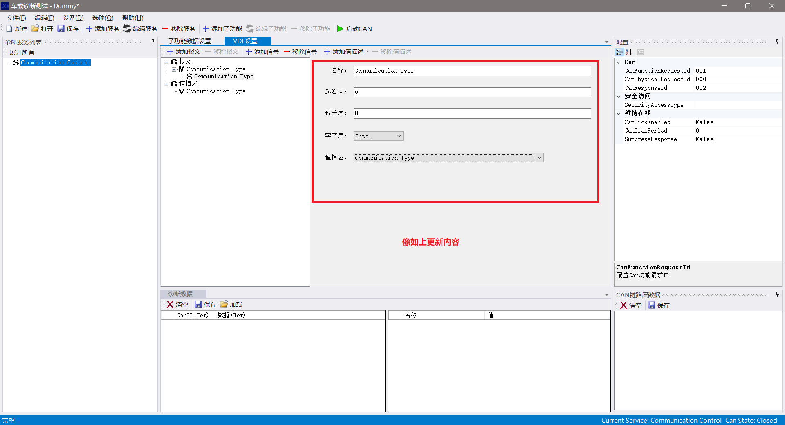
7. 创建EnableRxAndTx子功能，入下图所示
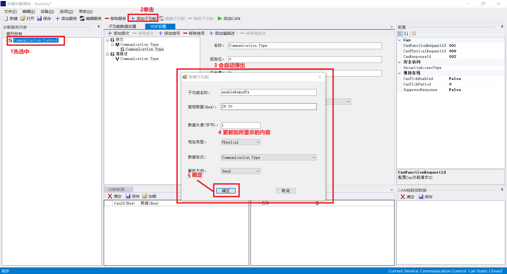
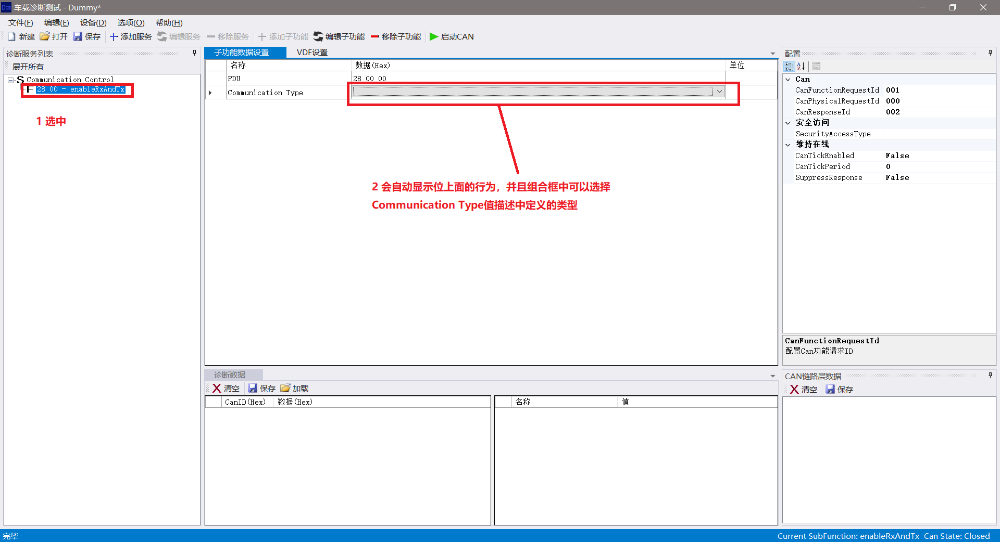
其他
熟悉上面的用户，即基本入门了，对于其他功能，可以参考Demos/Dummy.dcmproj文件
对于其他的功能值简单说一下：
- 对于需要接收某些接收到的数据，只需要将子功能的解析方法设置位Receive即可
- 对于其他的只描述，比如Bcd, Phy, ASCII，只需要在在添加只描述菜单中选择相应的值描述即可
自定义安全算法插件
前置条件：
1. 请确保您的PC上安装Visual Studio 2017以上的版本，个人推荐Visual Studio 2017社区版，可以免费使用
2. 从GitHub上，将本项目源码拷贝过来，然后使用安装好的VS打开DcmAppTest.sln
步骤
1. 使用VS2017社区版(我使用的版本，您至少需求>=此版本, 这样工程才可以进行编译)Visual C#创建类库工程, 入下图所示：
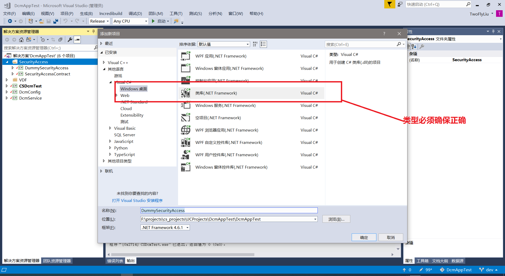
2. 设置项目引用的类型
① 引入SecurityAccessContract, 因为SecurityAccessContract项目中定义了插件接口的类型，入下图所示：
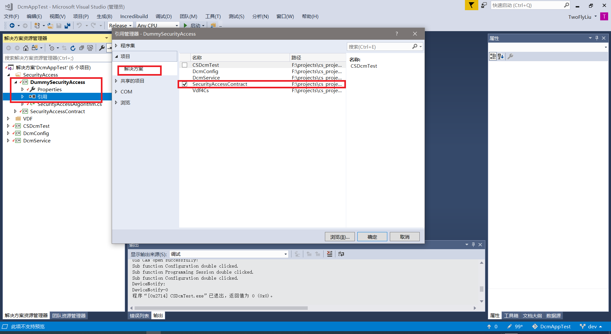
② 需要引用System.ComponentModel.Composition程序集，因为此程序集定义了插件导出的方式，入下图所示：
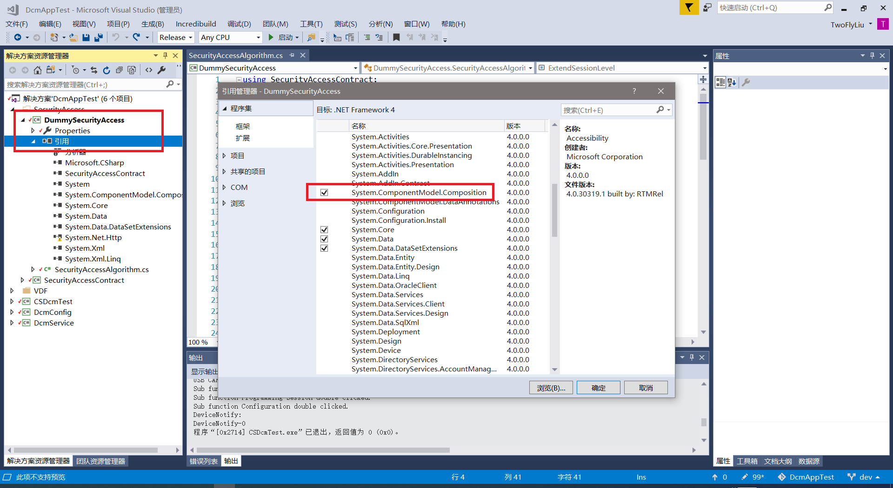
3. 实现插件
在实现插件之前，需要介绍一下SecurityAccessContract.ISecurityAccessAlgorithm接口
此接口定义如下：
namespace SecurityAccessContract
{
public interface ISecurityAccessAlgorithm
{
/// <summary>
/// 算法实现
/// </summary>
/// <param name="securityLevel">算法安全级别</param>
/// <param name="rawData">原始数据</param>
/// <returns>加密后的数据</returns>
List<byte> Encrypt(int securityLevel, List<byte> rawData);
/// <summary>
/// 算法名称
/// </summary>
string Name { get; }
}
}
此接口是插件需要实现的接口，其中：
- Encrypt方法用于根据种子数据来生成对应的Key, 根据ISO14229定义， securityLevel是27 SID后面的数据，一般为奇数；rawData 为27 奇数请求返回的种子数据， 此方法返回值为Key数据
- Name 表示安全算法的名称，因为最终所有的插件需要被放置在一个组合框中供用户来选择插件类型，所以插件需要一个可以被显示的字符串，而这个方法就是返回这个字符串
4. 下面来看一下Dummy安全算法的实现，具体的实现, 代码如下所示：
namespace DummySecurityAccess
{
[Export(typeof(ISecurityAccessAlgorithm))]
public class SecurityAccessAlgorithm : ISecurityAccessAlgorithm
{
public const int ExtendSessionLevel = 0x01;
public string Name => "Dummy";
public List<byte> Encrypt(int securityLevel, List<byte> rawData)
{
if (securityLevel % 2 == 0)
{
securityLevel -= 1;
}
if (securityLevel < 0)
{
throw new ArgumentException("security level must be great than 0");
}
if (ExtendSessionLevel == securityLevel)
{
return ExtendSessionLevelEncrypt(rawData);
}
else
{
throw new ArgumentException("Unsupported security level " + securityLevel.ToString());
}
}
private List<byte>ExtendSessionLevelEncrypt(List<byte> seed)
{
if (seed.Count != 4)
{
throw new ArgumentException("seed data length must be 4");
}
List<byte> key = new List<byte>();
const byte increVal = 0x55;
foreach (var s in seed)
{
key.Add((byte)(increVal + s));
}
return key;
}
}
}
首先，定义SecurityAccessAlgorithm类，并且让此类实现ISecurityAccessAlgorithm, 除此之外，此类还有一个Attribute:[Export(typeof(ISecurityAccessAlgorithm))],
只有定义 了这个Attribute，那么这个插件才可以被当作插件识别到
正如何您所看到，插件的名称为Dummy(public string Name => "Dummy"), 插件安全算法的实现，是只支持安全级别为1的级别；并且要求种子的长度为4；当前两者都满足的时候，
会将总之的每个值都加上0x55作为Key返回
5. 编译生成， 终止应该生成一个名为DummySecurityAccess.dll文件, 入下图所示：
安装编译好的插件
- 解压缩历史版本中列出的压缩文件到指定目录中
- 如果解压缩目录中没有addins文件，则新建此文件夹
- 将上面最后编译生成的插件DummySecurityAccess.dll拷贝到此文件夹中即可